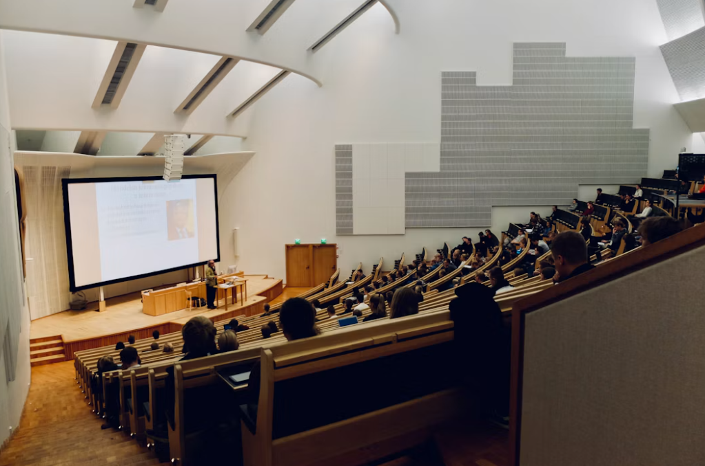

SERVICIOS ACADÉMICOS
Oferta Académica
Conoce las carreras, los horarios de clases y las herramientas que ofrecemos a nuestra comunidad.

Carreras y Duración
| Carrera | Nivel | Duración | Modalidad |
|---|---|---|---|
| Desarrollo de Software | Tecnicatura | 3 Años | Presencial |
| Seguridad Informática | Licenciatura | 4 Años | Híbrida |
| Redes y Sistemas | Especialización | 1 Año | Virtual |
| Administración de Base de Datos | Tecnicatura | 3 Años | Presencial |
| Inteligencia Artificial Aplicada | Diplomado | 6 Meses | Virtual |
Horarios de Clases
Encuentra tus asignaturas filtrando por carrera, turno o nombre.
| Asignatura | Carrera | Turno | Horario |
|---|---|---|---|
| Arquitectura de Redes | Seguridad Informática | Mañana | 07:30 - 11:30 hs |
| Programación Web Avanzada | Desarrollo de Software | Tarde | 13:30 - 17:30 hs |
| Auditoría de Sistemas | Seguridad Informática | Noche | 18:00 - 21:30 hs |
| Bases de Datos NoSQL y SQL | Desarrollo de Software | Mañana | 08:00 - 12:00 hs |
| Seguridad en Cloud Computing | Redes y Sistemas | Noche | 19:00 - 22:00 hs |
| Asignaturas mostradas: | 5 de 5 | ||
No hay asignaturas con esos filtros. Prueba con otra carrera o turno, o pulsa "Limpiar filtros".